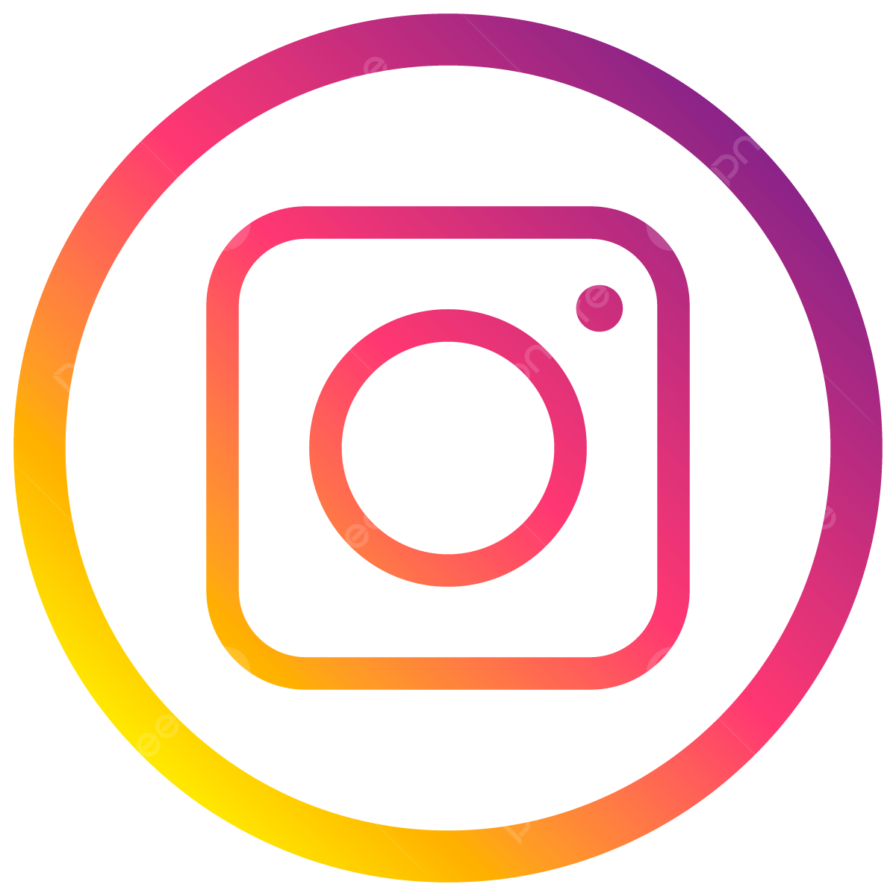
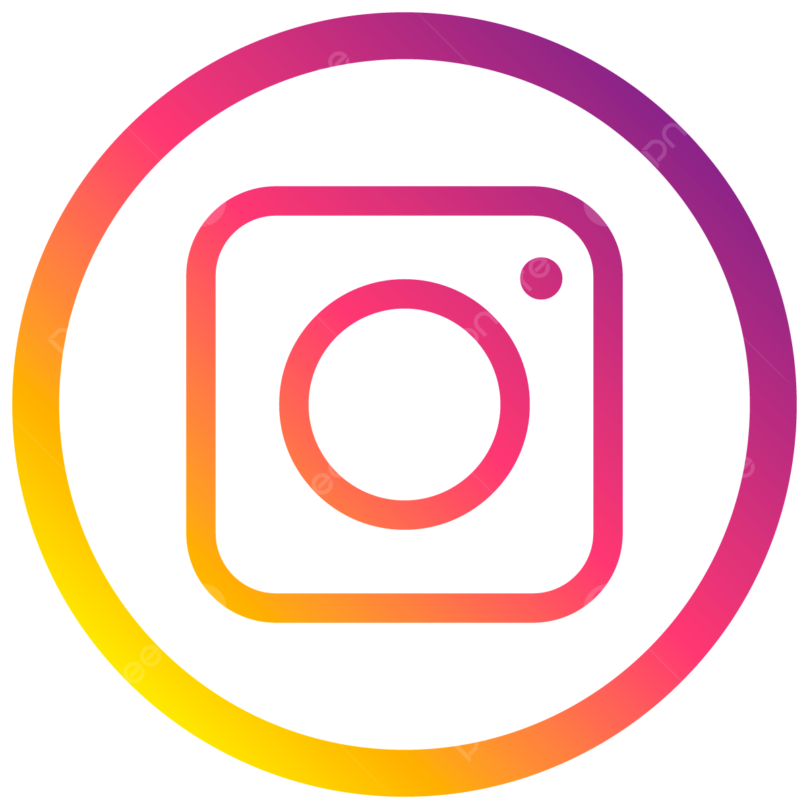

Objectives
I want to expand my skills as well as to enhance them. Also, I want to gain knowledge and experience as well as cope with my current weaknesses and to many more coming.
I believe that being a web developer requires patience and understanding its structure not just creating them. For that I am willing to understand as it will benefit me not just on my skills but also to my performance.
Education
Elementary: Ibabang Ilasan Elementary School (2015)
High School: San Roque Parochial School(2019)
Senior High School: San Roque Parochial School – GAS strand (2021)
Tertiary: Dalubhasaan ng Lungsod ng Lucena(20XX)
Awards
With Honors (2017-2021)
Divisional School Press Conference (Editorial Writing) – Third Placer (2019)
Divisional School Press Conference (Editorial Writing) – Fifth placer (2020)
Activities
SPA Choir – Tenor, San Roque Parochial School (2016 – 2020)
Journalism Club – Editorial Writer, San Roque Parochial School (2019 – 2020)
English Club – President, San Roque Parochial School (2019)
Soft Skills
Time Management
Communicative/Cooperative
Adaptable
Work Ethic/Professional
Respectful
Hard Skills
Video Editing
Photo Editing/Photography
Graphic Designing
Computer Literate
Programming (Python)
English Fluency
 
